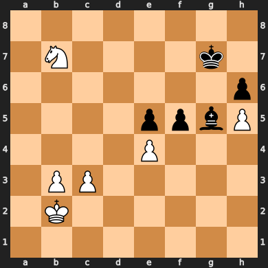

import chess
fen_string = "8/1N4k1/7p/4ppbP/4P3/1PP5/1K6/8"
board = chess.Board(fen_string)
def idx_to_name(idx):
letters = ['A','B','C','D','E','F','G','H']
row = (idx // 8) + 1
rank = idx % 8
letter = letters[rank]
return letter + str(row)
def letter_to_name(letter):
letter_dict= {'n': 'Knight',
'p': 'Pawn',
'q': 'Queen',
'b': 'Bishop',
'r': 'Rook'}
return letter_dict[str(letter).lower()]
piece_map = board.piece_map()
king_map = {}
white_map = {}
black_map = {}
for key, value in piece_map.items():
if str(value) in ["k", "K"]:
king_map[key] = value
elif str(value).isupper():
white_map[key] = value
elif str(value).islower():
black_map[key] = value
white_names = [letter_to_name(v)+"-"+idx_to_name(k) for k, v in white_map.items()]
black_names = [letter_to_name(v)+"-"+idx_to_name(k) for k, v in black_map.items()]
board